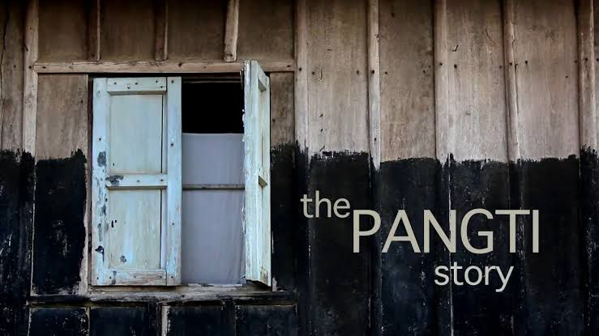
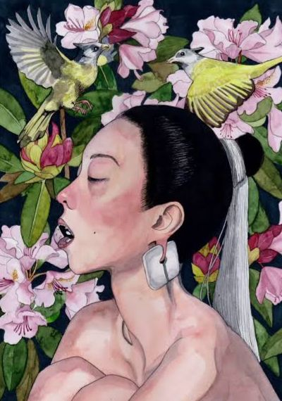
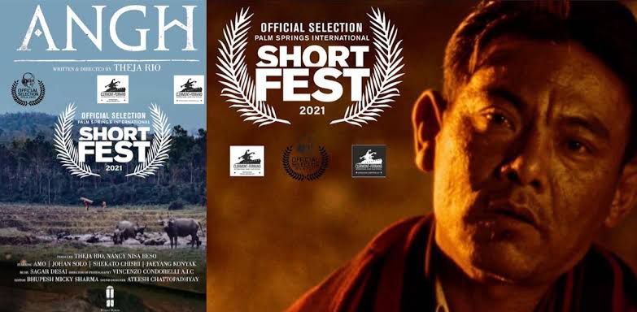
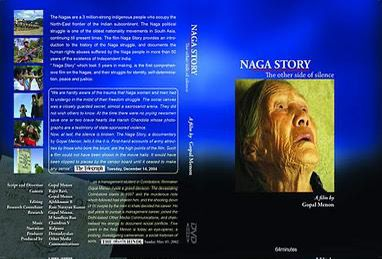

Visual Stories from the Hills

1. The Pangti Story (2017)
A documentary showcasing the transformation of a Naga village from hunting to conserving the Amur Falcon, reflecting community-driven environmental conservation efforts.

2. Sopfünuo (2005)
Based on an Angami Naga folktale, this docu-drama portrays a woman’s tragic journey, emphasizing themes of love, loss, and the spiritual connection to the land.

3. Angh (2021)
A short film depicting the challenges faced by a village chief and his son in a rapidly changing world, highlighting the tension between tradition and modernity in Naga society.

4. Naga Story: The Other Side of Silence (2003)
This documentary provides an in-depth look into the Naga people’s struggle for identity and justice, incorporating personal narratives that underscore the role of oral traditions in preserving history.